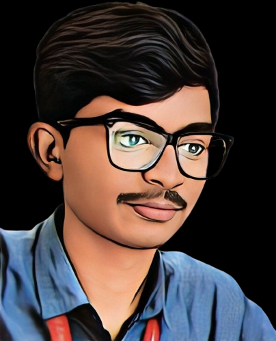

HI, I'M
I'm a security engineer from India. I spend my days in a SOC catching real attacks, and the rest of my time building systems that catch them sooner, and that decide when a machine can be trusted to act.

Most of what I know about security I learned by watching things go wrong in a real environment, then asking why the tools didn't see it coming.
I studied computer science at Sri Krishna College of Engineering and Technology, then joined Hewlett Packard Enterprise as a cybersecurity analyst intern in February 2025. I became a full-time analyst that September. Now I triage more than 100 alerts a day, run incidents from detection through remediation, and work through phishing, malware, account compromise and lateral movement.
That job taught me something the dashboards don't: attacks are sequences, but alerts arrive as isolated events. A login here, a download there, a permission change later. Connecting them is where the real work happens, and it's what I try to build tools for.
So outside of work I build. Systems that correlate signals into attack paths. Controls that check whether an AI agent's claim is true before it's allowed to act. I'm most interested in autonomous security: software that detects, reasons and enforces, without us having to take its word for it.
I'm open to security engineering, detection engineering and AI security roles anywhere in the world, and to research conversations in the same space.
A confident explanation isn't a true one, whether it comes from an analyst, a model or an agent. I want to see what the environment can actually prove before anyone acts.
One alert is a data point. The story is in the relationships between users, devices, sessions and time. Good detection starts by connecting them.
It isn't enough to say an AI system is safe. Trust should be enforced at runtime, with clear boundaries about what it may do.
B.E. at Sri Krishna College of Engineering and Technology. Where I got into security, cloud and building things that protect other things.
Joined HPE as a cybersecurity analyst intern. Monitored SIEM and endpoint alerts, investigated phishing and malware with Splunk and CrowdStrike, and helped shape incident response playbooks.
Became a full-time analyst in an enterprise SOC and cyber defense team. Started owning incidents, tuning detections and automating the repetitive parts.
Started designing SignalFusion, AEGIS, SecureModelGate and WITNESS, which turned what I see at work into engineering problems worth solving.
Looking for a team where I can build detection and AI security systems at scale.
At HPE I'm the person on the other end of the alert queue, deciding what's real, how bad it is, and what to do next.
A deterministic admission-control layer for autonomous security and AIOps agents. It checks whether the real environment backs up an agent's proposed fix before that fix runs.
A platform that normalizes telemetry from endpoint, cloud and identity systems, correlates entities across time, and models attacker behavior with MITRE ATT&CK to surface multi-stage and lateral-movement attacks.
A zero-trust control plane for AI agents: identity validation, intent-aware authorization, policy-based access control, and semantic controls against prompt injection and misuse. It puts explicit trust boundaries around autonomous systems.
A security architecture for controlling how models and agents interact with the world, through deterministic policy, trust boundaries and runtime verification. I think of AI security as an enforcement problem, not only a safety discussion.
A full-stack app that combines rule-based detection with LLM reasoning to spot phishing, scams and malicious URLs, with real-time threat monitoring.
Watches file-system behavior and halts encryption processes that look like ransomware. Python.
Detects deep fake video through audio and video spectral analysis.
Modular Terraform for Kubernetes on AWS, with per-environment config and secure state.
Cloud storage on AWS S3 with quantum-resistant algorithms and secure key management.
Autonomous malware analysis.
AI-driven incident response.
Splunk, CrowdStrike, Proofpoint, Zscaler, Wiz, threat intelligence platforms
Python, SQL, Bash, TypeScript, Terraform, a little Go
AWS, Azure, IAM, RBAC, MFA, SSO, zero trust
LLM-based analysis, prompt-injection defense, anomaly detection, behavioral analytics
Incident response, threat hunting, alert correlation, root cause analysis
MITRE ATT&CK, detection pipelines, security observability, policy-as-code
If you're hiring for security engineering, want to compare notes on detection or AI security, or just want to say hi, I'd like to hear from you.